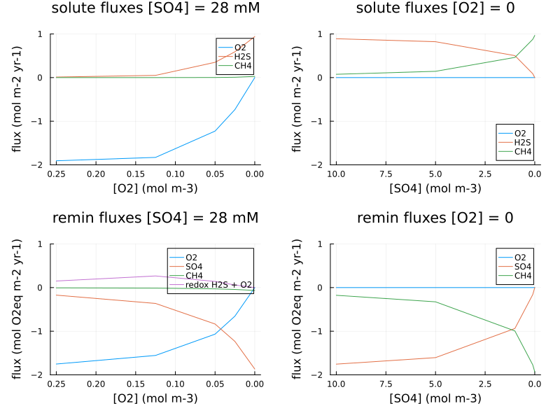

Sediment Boudreau (1996) test cases
To run sediment test cases from (Boudreau, 1996), assuming the Julia environment PALEOsediment/examples has already been activated:
julia> cd("examples/boundreau1996")
julia> include("PALEO_examples_sediment.jl")This will run and plot output (NB: the first run will be slow as Julia JIT compiles the code).
The configuration includes three sediment columns, with:
- Shelf / slope case
- Rise case
- Rise, no bioturbation
NB: this configuration doesn't include N, so results differ in detail from the paper.
Oceanfloor [O2] and [SO4] gradients
julia> include("PALEO_examples_sediment_x10.jl")The configuration includes ten sediment columns, with the physical environment for the (Boudreau, 1996) shelf/slope case, no bioturbation, and Corg input with two reactivity fractions (a combination of the high-reactivity fraction from the shelf/slope case, and the low reactivity fraction from the rise case).
- Columns 1-5: oceanfloor [O2] gradient, constant [SO4] = 28mM
- Columns 6-10: oceanfloor [SO4] gradient, at constant [O2] = 0
Summary plots show oceanfloor solute fluxes and remineralization pathways:

Figure 1
Oceanfloor solute fluxes and remineralization pathways vs oceanfloor [O2] and [SO4] concentration
Sulphur isotope example
julia> include("PALEO_examples_sediment_Sisotopes.jl")Three sediment column example as PALEO_examples_sediment.jl, with sulphur isotopes enabled and low (1 mM) oceanfloor [SO4] to illustrate Rayleigh fractionation within the sediment column as [SO4] becomes limiting.
Carbonate chemistry example
julia> include("PALEO_examples_sediment_carb.jl")Three sediment column example as PALEO_examples_sediment.jl, with carbonate chemistry.
NB: POC includes C, P only (no N) to simplify TAlk conservation check (where soluteflux_TAlk = 2*soluteflux_H2S)
julia> PALEOmodel.get_array(run.output, "fluxOceanfloor.soluteflux_TAlk", (cell=1, tmodel=1e12)).values
0.014436958064622729
julia> PALEOmodel.get_array(run.output, "fluxOceanfloor.soluteflux_H2S", (cell=1, tmodel=1e12)).values
0.007218479032309767
julia> PALEOmodel.get_array(run.output, "fluxOceanfloor.soluteflux_SO4", (cell=1, tmodel=1e12)).values
-0.0072184790322306815